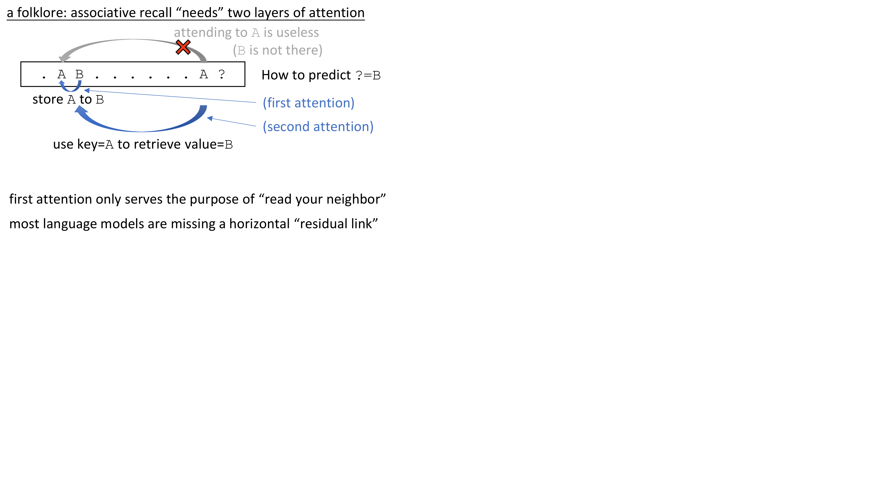

The folklore: associative recall needs 2 attention layers
[A] [B] … [A] [?] → predict [B]
- Causal masking prevents first [A] from attending forward to [B]
- Layer 1: copies A’s info into B’s representation — B now “knows” its key is A
- Layer 2: second [A] queries, retrieves B via enriched key-value store
- Using global $O(n^2)$ attention just to pass info between neighbors = “shooting a bird with a cannon”
Core problem: Most architectures lack an explicit mechanism for local token-to-token information flow. Attention is global overkill for nearest-neighbor mixing.

Two-layer attention mechanism for associative recall (plots.pdf p.5)